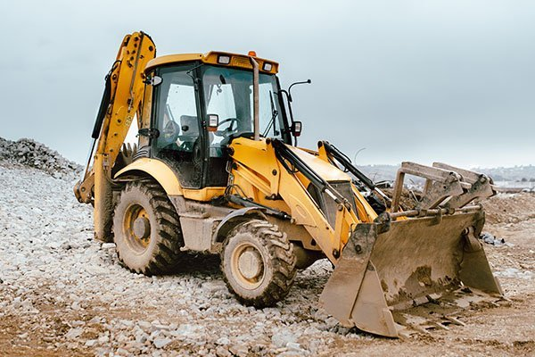
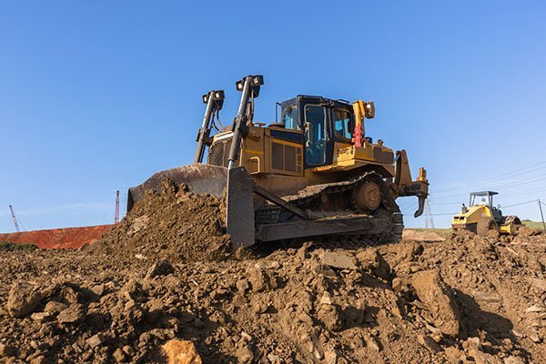
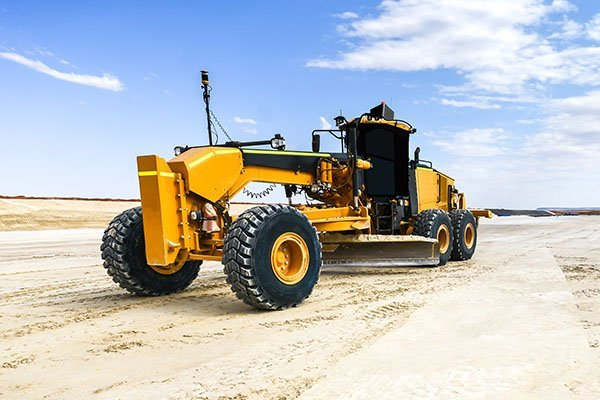
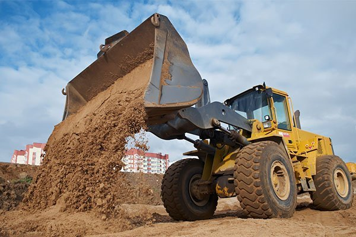
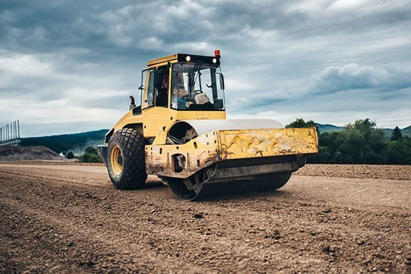

Earthmoving Plant Hire Victoria, New South Wales and Queensland
Looking for earthmoving plant hire services in Sydney, Brisbane or Melbourne? From small domestic projects to
major commercial developments – you can trust Eastern Plant Hire!
Plant & Equipment Hire Available Across Melbourne, Sydney and Brisbane
As one of Australia’s leading plant hire companies, Eastern Plant Hire offers an extensive range of earthmoving
machinery and earthmoving equipment available for hire across Melbourne, Sydney and Brisbane. Our range of
earthmoving equipment available for wet hire includes:Whether you’re looking for material supply or disposal
options, through to long and short term plant hire, we will provide a cost-effective solution to exceed the
needs and expectations of your project across Melbourne, Sydney, and Brisbane.
All our machines are meticulously maintained and upheld to only the strictest industry standards – ensuring all
earthmoving plant for hire is as safe, efficient, and effective as possible. Our operators have all extensive
experience and have the required licenses to complete projects of all sizes.
Eastern Plant Hire is committed to delivering “The Best Service on Earth,” with a vision to become the most
competitive and reliable earthmoving plant hire company on the East Coast. After successfully servicing some of
Australia’s largest infrastructure projects, we bring world-class expertise and unmatched industry insights to
all earthmoving plant hire services. You can be assured that when hiring from EPH we will complete the project
in the fastest possible timeframe while ensuring we keep to your budget.

BACKHOE

DOZER
ECAVATOR

GRADER

ITCLOADER

ROLLER